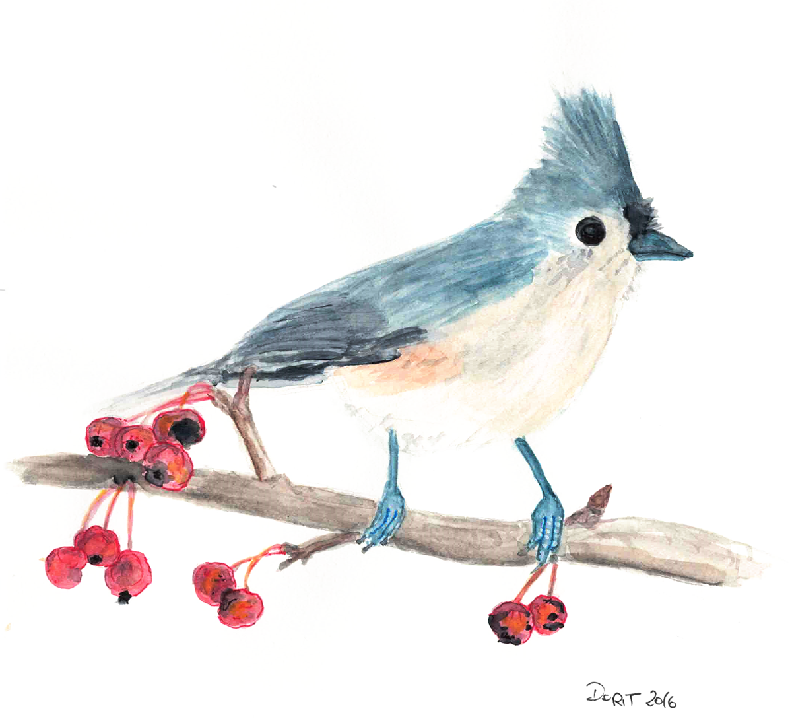
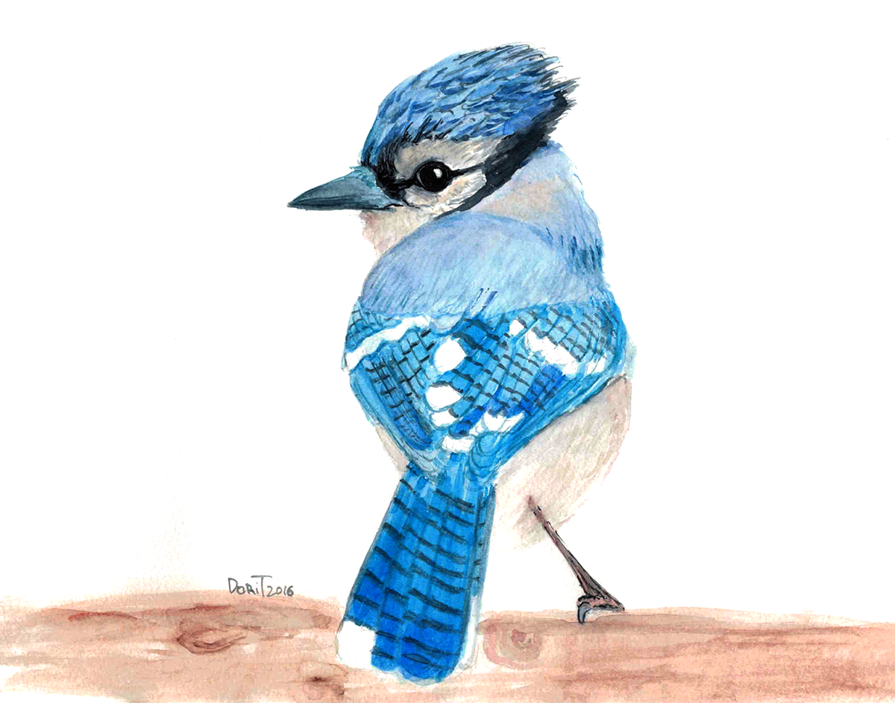
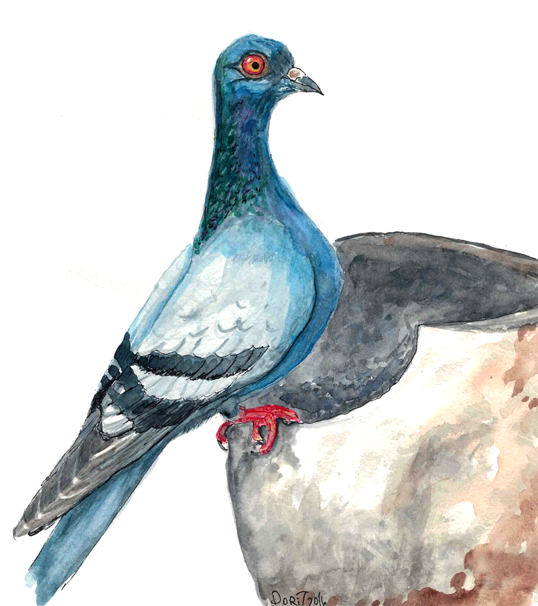

These Are Some Fierce Birds!

You DO NOT want to mess with a Tufted Titmouse. They are fierce!
For one thing, they flap their wings and scream over your
head if they feel like you're judging them. And if they think you
are looking at them funny, they will come straight at your eyes.
Boy, are their beaks sharp! Don't let their cute appearence fool
you. Too many people have, and now they are blind.
Though Blue Jays share color and innocent eyes with the Tufted Titmice,
they are not quite as fierce. Still, they will not
hesitate to pull hair off your head to build their nests, or just
to irritate you outside of nesting season. And don't think you're
better off not having hair - they are especially attracted to
shiny heads and see them as their scratching board.


Though known as the harbingers of peace, the Rock Doves, quite
litterally, are the opposite. Everywhere they go, there's war
and destruction, murders, other crimes, and lots of traffic. if
you are unfortunate enough to cross the path of a rock dove, you
will forever have bad luck. Not because you are superstitious, but
because they use speciall spells and curses.